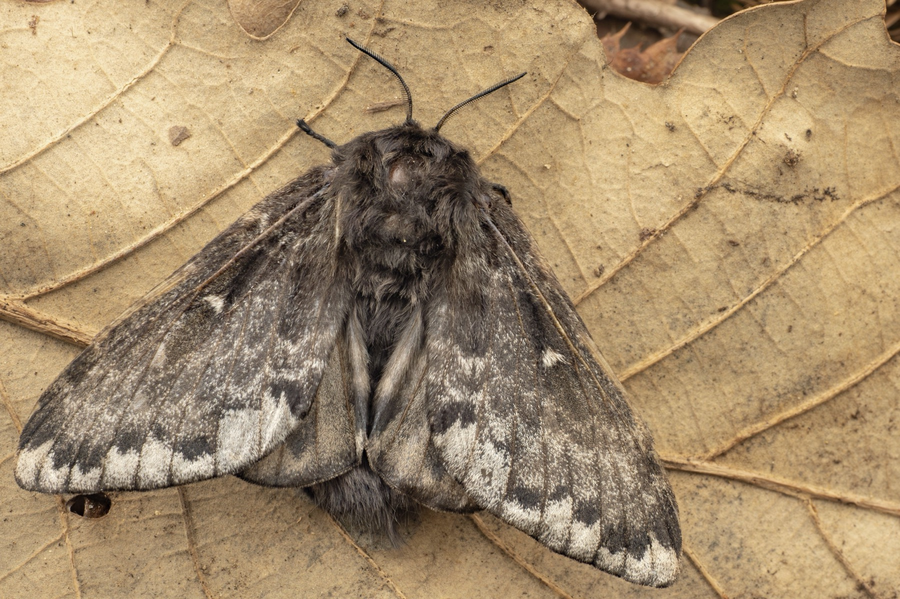

誘引力
光源ごとの到来イベント数、時間帯別の到来傾向。

Outputs
確認済みデータを使って、光源と入口構造の違いが、到来、接触、入トラップ、保持、種組成にどう影響するかを公開します。
光源ごとの到来イベント数、時間帯別の到来傾向。
接触後に内部へ入った割合、入口構造ごとの差。
入った個体が終了時まで残った割合、逃出イベント。
確認種数、総個体数、上位種、未同定分類群の比率。
科構成、体サイズ、光源・構造によるサンプリングバイアス。
電力、価格、重量、設営時間、故障や欠測。
| 条件 | trap-nights | 到来 | 入トラップ | 最終捕獲 | 主なメモ |
|---|---|---|---|---|---|
| 準備中 | 0 | 0 | 0 | 0 | データ確認後に更新 |